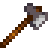
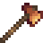

Herramientas
Las herramientas te ayudan a realizar diferentes cosas. Puedes llevarlas contigo en tu mochila para poder usarlas, o almacenarlas en cofres cuando no las necesites.
Mejoras
Puedes mejorar tus herramientas en la Herrería a cambio de oro y barras de metal, con mejoras que tardan dos días en completarse. Durante la mejora, no podrás comprar nada o pedir a Clint que abra geodas. Las herramientas deben mejorarse en orden ascendente de materiales; por ejemplo, una herramienta de cobre no puede mejorarse directamente a iridio.
Consejos:
- El significado práctico de que una actualización "tarde dos días en completarse" es que te despertarás en dos días sucesivos sin tu herramienta. Puedes usar la herramienta durante el día y luego llevarla a la Herrería (antes de que cierre) para mejorarla. Al día siguiente te quedarás sin tu herramienta. Al otro día, debes ir a la Herrería a recoger la herramienta, y podrás utilizarla durante el resto del día.
- Cuando una herramienta haya terminado de actualizarse, aparecerá un mensaje en la esquina inferior izquierda de la pantalla al despertar el día.
Encantamientos
- Articulo principal: Encantamientos
| Nombre | Hacha | Caña | Azada | Pico | Regadera | Efecto |
|---|---|---|---|---|---|---|
| Auto-Gancho | Automáticamente engancha al pez/basura cuando muerde (lo cual inicia el minijuego si es un pez). | |||||
| Arqueólogo | Duplica la probabilidad de encontrar artefactos en los huecos de artefactos. | |||||
| Sin fondo | La regadera nunca se quedará sin agua. | |||||
| Eficiente | No usa energía. | |||||
| Generoso | 50% de probabilidad de encontrar el doble de ítems al cavar. | |||||
| del Maestro | Añade un nivel extra de pesca cuando el jugador tiene la caña de pescar en la mano. | |||||
| Poderoso | Añade 1 nivel de potencia extra para el pico, 2 para el hacha. | |||||
| Resistente | 50% de probabilidad de que el cebo y el aparejo no sean consumidos cuando se usan. | |||||
| Expansivo | Incrementa la cantidad de carga máxima para incrementar el área de efecto. Incrementa el área máxima de efecto a 5x5 casillas. | |||||
| Afilado | 3 maderas extras al cortar árboles de Roble, Arce, Pino, Palmera y Caoba. 3 maderas extra de los Árboles Setas. Probabilidad de obtener madera noble extra de los tocones. Probabilidad de obtener cultivos extra de los cultivos gigantes. | |||||
| Ligero | El uso de herramientas es un 33% más rápido. |
Eficiencia
La eficiencia en las habilidades afecta a la cantidad de energía usada al utilizar ciertas Herramientas.
En el nivel de habilidad 0, cada uso exitoso de un Pico, el Hacha la Azada y la Regadera usan 2 de energía. Los usos fallidos (por ejemplo, intentar cortar un Tronco grande con el hacha de arranque) cuestan 1 energía. Cada caña de pescar usa 8 de energía, incluso si el uso falla (por ejemplo, la línea de pesca no aterriza en el agua). La regadera de básica utiliza 2 puntos de energía.
Cada aumento en la habilidad reduce los requisitos de energía en 0,1 puntos para herramientas específicas (enumeradas a a continuación). Los aumentos de habilidad más allá del nivel 10 (solo es posible temporalmente a través de Bonificadores) continúan disminuyendo los requisitos de energía. Entonces, por ejemplo, usar un pico en el nivel de minería 13 cuesta solo 0.7 puntos por golpe. (El juego realiza un seguimiento de las cantidades fraccionarias de energía, pero en la interfaz de usuario se redondean al número entero más cercano).
Cargar una regadera mejorada aumenta su costo de energía en 2 puntos por carga; cada aumento en la habilidad reduce el requerimiento de energía en 0.1 puntos (independientemente del nivel de potencia). En el nivel agrícola 0, el principiante puede usar 2 de energía para regar una loseta; la regadera de iridio a máxima potencia utiliza 10 de energía para regar dieciocho baldosas. En el nivel de agricultura 10, la regadera inicial utiliza 1 energía; el iridio a máxima potencia utiliza 9 de energía (10 menos 0,1 por nivel de habilidad). Usar una regadera mejorada para regar menos baldosas de las que puede cuesta la misma energía que la primera actualización de la regadera puede regar esa cantidad de baldosas (una sola baldosa siempre es la misma que la regadera inicial, 5 baldosas siempre lo mismo que la regadera de acero). Intentar usar una regadera vacía no cuesta energía. Llenar una regadera nunca consume energía.
Mejorar un hacha, un pico o una azada no altera la cantidad de energía necesaria para usarlo. Sin embargo, la mayor eficiencia del hacha, el pico o la azada dará como resultado que se utilice menos energía en general para la misma tarea que una herramienta de nivel inferior.
Tenga en cuenta que todas las azadas usan la misma energía (2 puntos en el nivel agrícola 0 y 1 punto en el nivel agrícola 10), ya sea que estén cargadas o que se usen para cultivar una baldosa de tierra.
Todas las cañas de pescar usan la misma energía: 8 puntos en el nivel de pesca 0 y 7 puntos en el nivel de pesca 10.
Herramientas con eficienciaAgricultura Recolección Pesca Minería |
Herramientas sin eficienciaLas siguientes herramientas no consumen energía:
|
Ni rellenar una trampa para cangrejos con cebo ni recogerlo consume energía, en cualquier nivel de habilidad.
Azadas
- Articulo principal: Azadas
Se utilizan principalmente para labrar la tierra para la Agricultura y para desenterrar lugares de artefactos. Las azadas mejoradas pueden usarse para labrar más de una casilla a la vez manteniendo el clic izquierdo y "potenciando" la herramienta.
| Imagen | Nombre | Precio | Ingredientes | Mejoras |
|---|---|---|---|---|
| Azada | Herramienta inicial | N/A | ||
| Azada de Cobre | Aumenta el área máxima de efecto en 3 casillas, en una fila delante de ti. | |||
| Azada de Acero | Aumenta el área máxima de efecto en 5 casillas, en una fila delante de ti. | |||
| Azada de Oro | Aumenta el área máxima de efecto en 3x3 casillas. | |||
| Azada de Iridio | Aumenta el área máxima de efecto en 6x3 casillas. |
Picos
- Articulo principal: Picos
Se utiliza principalmente para romper piedras y recoger equipos o muebles colocados. También se utiliza para rellenar la tierra que ha sido labrada con una azada.
Usar un pico en un Monstruo hará una pequeña cantidad de daño, similar a las armas.
| Imagen | Nombre | Precio | Ingredientes | Mejoras |
|---|---|---|---|---|
| Pico | Herramienta inicial | N/A | Puede romper pequeñas rocas en cualquier lugar. En Las minas, puede romper piedras más duras de los niveles 1-40 en dos golpes y puede romper grandes rocas con varios golpes. Puede romper menas de cobre en 3 golpes. Nota: No puede romper rocas en La granja. | |
| Pico de Cobre | En Las Minas, puede romper todas las rocas de los niveles 1-40 en un golpe y 40-79 en dos golpes. Puede romper los menas de cobre en 2 golpes. | |||
| Pico de Acero | Puede romper las Rocas de la Granja. En Las Minas, puede romper rocas de los niveles 40-79 en un golpe, y rocas de La Cantera en dos golpes. Rompe menas de cobre en 1 golpe, menas de hierro en 2 golpes, menas de oro en 3 golpes y menas de iridio en 6 golpes. Puede romper rocas grandes en 4 golpes. Puede romper la barrera dentro de la mina que impide al jugador hablar con el Enano. | |||
| Pico de Oro | Puede romper un meteorito. En las Minas, puede romper rocas de niveles 80-120 de un solo golpe. Rompe menas de cobre y hierro en 1 golpe, menas de oro en 2 golpes y menas de iridio en 4 golpes. | |||
| Pico de Iridio | Puede romper rocas en la Cantera y la Caverna Calavera de un solo golpe. |
Hachas
- Articulo principal: Hachas
Se utiliza para cortar árboles y obtener madera, savia y madera noble al talar un tocón grande o un tronco grande. El hacha también debe usarse para cosechar cultivos gigantes. Al igual que el pico, puede infligir una pequeña cantidad de daño a los monstruos.
| Imagen | Nombre | Precio | Ingredientes | Mejoras |
|---|---|---|---|---|
|  | Hacha | Herramienta inicial | N/A | 10 golpes para cortar árboles, 5 golpes para cortar pequeños tocones. |
|  | Hacha de cobre | Puede cortar los Tocones grandes. 8 golpes para cortar árboles, 4 golpes para cortar pequeños tocones. | ||
| Hacha de acero | Puede cortar los troncos grandes. 6 golpes para cortar árboles, 3 golpes para cortar pequeños tocones, 3 golpes para un árbol de etapa 4, y 2 golpes para un árbol de etapa 3 e inferior. | |||
| Hacha de oro | 4 golpes para cortar árboles, 2 golpes para cortar pequeños tocones, 2 golpes para un árbol de fase 4, y un golpe para un árbol de fase 3 o inferior. | |||
| Hacha de iridio | 2 golpes para cortar los árboles, 1 golpe para cortar pequeños tocones, 1 golpe para un árbol de fase 4 o inferior. |
Regaderas
- Articulo principal: Regaderas
Se utiliza para regar los cultivos. Una planta de cultivo no crece el día que no se riega. Si llueve, la lluvia riega todos los cultivos sin necesidad de utilizar la regadera.
Las regaderas mejoradas pueden usarse para regar más de un cuadrado a la vez manteniendo el clic izquierdo y "potenciando" la herramienta.
| Imagen | Nombre | Precio | Ingredientes | Mejoras |
|---|---|---|---|---|
| Regadera | Herramienta inicial | N/A | Tiene un total de 40 cargas de capacidad antes de necesitar llenarlo. | |
| Regadera de cobre | Incrementa la capacidad en 55 cargas.
Incrementa el área máxima en 3 cuadrados en línea recta. | |||
| Regadera de acero | Incrementa la capacidad en 70 cargas.
Incrementa el área máxima en 5 cuadrados en línea recta. | |||
| Regadera de oro | Incrementa la capacidad en 85 cargas.
Incrementa el área máxima a un 3x3 (9 casillas correspondientes). | |||
| Regadera de iridio | Incrementa la capacidad en 100 cargas.
Incrementa el área máxima a un 6x3 (18 casillas correspondientes). |
Cubos de basura
- Articulo principal: Cubos de basura
Se utiliza para desechar objetos del Inventario.
Las mejoras del cubo de basura te permite obtener un porcentaje del valor del objeto desechado.
| Imagen | Nombre | Costo | Ingredientes | Mejoras |
|---|---|---|---|---|
| Cubo de Basura | Herramienta inicial | Se utiliza para desechar objetos desde el menu del inventario. | ||
| Cubo de basura de cobre | Cuando se desecha un objeto, obtiene 15% de su valor. | |||
| Cubo de basura de acero | Cuando se desecha un objeto, obtiene 30% de su valor. | |||
| Cubo de basura de oro | Cuando se desecha un objeto, obtiene 45% de su valor. | |||
| Cubo de basura de iridio | Cuando se desecha un objeto, obtiene 60% de su valor. |
Cañas de Pescar
Se utiliza para pescar. Mantén el botón izquierdo para cargar y lanzar, WASD o las flechas de dirección para ajustar ligeramente el tiro.
| Imagen | Nombre | Precio | Mejoras | Localización | Requisitos |
|---|---|---|---|---|---|
| Caña de entrenamiento | Más fácil de usar (solo captura peces comunes). | Comprándola en la Tienda de pesca | |||
| Caña de bambú | Te la da Willy Comprándola en la Tienda de pesca |
||||
| Caña de fibra de vidrio | Permite usar Cebo. | Comprándola en la Tienda de pesca | (Recibirás una carta diciendo que está disponible) | ||
| Caña de iridio | Permite usar Cebo y Aparejos. | Comprándola en la Tienda de pesca | (Recibirás una carta diciendo que está disponible) | ||
| Caña de Iridio Avanzada | Permite usar Cebo y dos Aparejos a la a vez | Tras obtener la maestría de pesca |
Otras herramientas
| Imagen | Nombre | Precio | Descripción | Localización |
|---|---|---|---|---|
| Ninguna | Mochila de tamaño 12 | Herramienta inicial | Úsala para llevar tu inventario, estando directamente disponible para su uso. | Empiezas con ella. Puedes guardar 12 tipos de objetos y puede mejorarse. |
| Mochila de tamaño 24 | Segunda mejora del inventario (12 huecos más). | Comprándola en la Tienda local Pierre's tras recibir el correspondiente correo. | ||
| Mochila de tamaño 36 | Tercera mejora del inventario (12 huecos más). | Comprándola en la Tienda local Pierre's tras comprar la Mochila de tamaño 24. | ||
| Guadaña | Úsala para cortar hierba, y obtener Heno tras haber construido el Silo (hasta que el silo esté lleno). | Empiezas con ella. | ||
| Guadaña dorada | N/A | Es más poderoso que una guadaña normal. | Se encuentra al final de la Mina de cantera. | |
| Cubeta lechera | Úsala conseguir Leche de las vacas o de las cabras. | Comprándola en el Rancho de Marnie. | ||
| Tijeras de esquilar | Úsala para conseguir Lana de una Oveja. | Comprándola en el Rancho de Marnie. | ||
| Radiador | Mantén calientes y felices a los animales en invierno. | Comprándola en el Rancho de Marnie. Es la recompensa por completar el | ||
| Batea de cobre | N/A | Utilízala para recoger menas en los ríos. | Desbloquéala al completar en el Centro Cívico el Lote de pesca o con las mejoras de Joja. | |
| Recolector automático | Se encarga automáticamente de la recolección de tus animales cada mañana. Debe colocarse dentro del Corral o Establo. | Desbloqueado después de llegar a Agricultura Nivel 10, el jugador recibirá una carta por correo de Marnie. | ||
| Auto-Caricias | La tecnología patentada de Joja Co. para gallineros y graneros. Mantiene a tus animales contentos, pero no puede sustituir los beneficios del contacto humano. Las caricias normales pueden ser proporcionadas como suplemento. | Comprándolo en el MercaJoja tras completar el Almacén de Joja. Recompensa rara en la Caverna Calavera. Botín de monstruos en las minas con el modo desafío activado. |
Eliminación de herramientas
La mayoría de las herramientas no pueden colocarse en el cubo de basura de la pantalla de inventario del jugador, ni arrastrarse fuera de la pantalla de inventario para soltarlas. Las herramientas que se pueden destruir y/o dejar caer son: todas las cañas de pescar, el Recolector automático, el Radiador y la Batea de cobre.
Si el jugador pierde de alguna manera la Guadaña, el Hacha, el Pico o la Regadera (al morir en las minas, por ejemplo), al día siguiente aparecerá una versión básica de la herramienta junto a la cama del jugador o en su nevera, (si el jugador tiene una cocina). o en el buzón de objetos perdidos de la Mansión del alcalde. El alcalde Lewis puede enviar una carta por correo diciendo que los encontró y los devolvió.
Errores
- En el modo multijugador, es posible perder una herramienta en Las Minas, y no recuperar nunca un reemplazo. Una solución conocida para este error es hacer que uno de los jugadores que no son anfitriones cree un nuevo personaje, que deje sus herramientas en un cofre, y que luego salga y vuelva a entrar como su personaje original.
- Cuando se blande un pico, un hacha o una azada en uno de los cactus del Desierto de Calico, la herramienta desaparece de la animación.
- Si el jugador dispara una caña de pescar lejos de un punto de pesca, puede congelar al jugador en el lugar. Esto desactiva todos los menús y no se puede guardar o salir del juego sin forzarlo.
Historial
- 1.4: Las herramientas actualizadas donde Clint ahora te dirán cuándo están listas.
- 1.5: Agregado los Encantamientos.
| Herramientas | |
|---|---|
| Básicas | Azadas • Cubos de basura • Guadaña • Guadaña dorada • Hachas • Picos • Regaderas |
| Pesca | Caña de bambú • Caña de entrenamiento • Caña de fibra de vidrio • Caña de iridio • Barra de Iridio Avanzada • Trampa para cangrejos |
| Otros | Auto-Caricias • Batea de cobre • Cubeta lechera • Incubadora • Radiador • Recolector automático • Tijeras de esquilar • Tolva de heno |